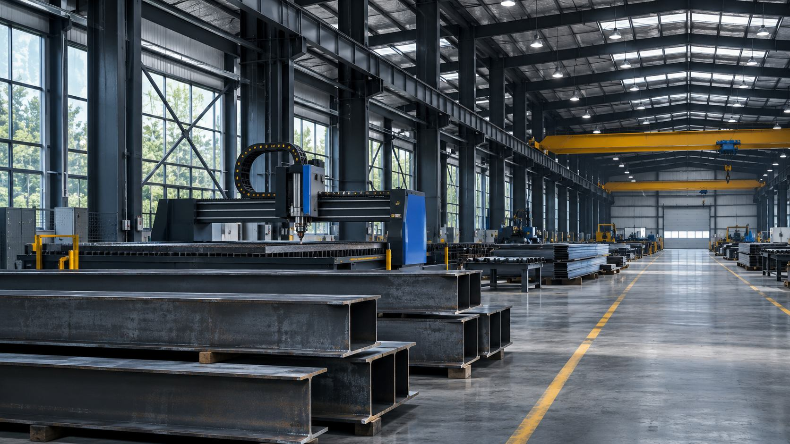
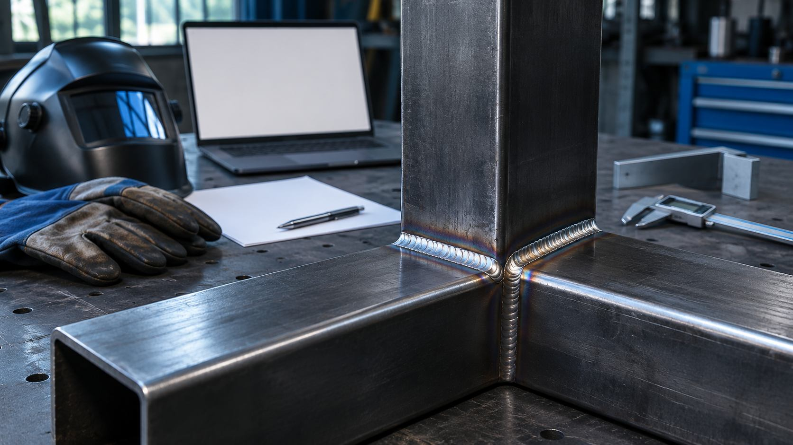

Собрали структуру
Разделили технологии, типы конструкций, примеры и требования к запросу.
Металлоконструкции / кейс-концепт

Изготовление узлов и сборка конструкций по согласованным чертежам.
Состав работ
Закупщику нужно быстро понять возможности цеха и отправить чертёж. На старом сайте перемешаны услуги, фотографии и общие обещания. В концепте выстраиваем путь от технологии и примеров узлов к составу исходных данных для расчёта.
Разделили технологии, типы конструкций, примеры и требования к запросу.
У каждой работы указали состав и ограничения без выдуманных достижений.
Показали производство крупно, техническую информацию — рядом с фотографиями.
Описали редактирование материалов, формы и проверку мобильной версии.
Адаптивный сайт с каталогом возможностей, страницами работ и понятным запросом расчёта.
В концепте показан предполагаемый состав результата, а не завершённый клиентский проект.Обсуждение задачи → структура и прототип → сборка → проверка и передача.
Срок после оценки материалов. Точный состав, календарь и условия фиксируем перед началом работ.
Посмотреть похожий концептИтог зависит от объёма, материалов и интеграций.